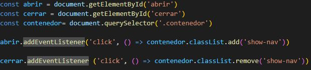

Inicialmente, aplico al contenedor padre un transform-origin, esta propiedad permite modificar el origen de las transformaciones, podemos ubicarlo en cualquiera de los cuatro vertices del recuadro. Adicional, agrego una transición de 0.5 segundos para visualizar el efecto.
Al contenedor del menú, aplicamos una transformación la cual rotara unos -20 grados, para así visualizar el Menú al inferior del costado izquierdo.
Al contenedor que contiene el circulo, lo posiciono como fijo para que aunque se desplace en la página, aparezca situado en el mismo lugar. Seguido de esto, integro una transformación de rotación de -70grados.
Al contenedor del menú, le aplico una transformación la cual no girara al eje x.
Por último, agrego las transformaciones aplicando un translate hacia el eje x, y transiciones de 0.4 segundos al nav, ul y li, de esta manera se logra una animación limpia y atractiva
Cree 3 constantes, abrir,cerrar y contenedor, en el cual para abrir y cerrar se agrega un addEventListener, este permite que al momento de hacer el click, la animación funcione, en este caso girar para mostrar el menú.
